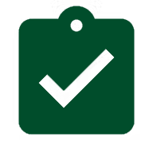

Да. Курс начинается с базы и нужен как раз для того, чтобы собрать систему до практики и закупки оборудования.
Сценарий 01
Новички
- Нужна понятная база до покупки оборудования.
- Важно не собирать знания случайными кусками.
Практический курс по выращиванию клубники в контролируемой среде: растение, свет, климат, полив, питание, качество ягоды и логика запуска.
Это образовательный маршрут, а не проектная смета. Если сначала нужно собрать системную базу по ферме, начинать лучше отсюда.
Это маршрут для тех, кто хочет сначала понять технологию выращивания, а уже потом переходить к смете, закупке и запуску.
Курс собирает ключевые части фермы в одну систему: растение, среда, полив, питание, качество ягоды и рамка экономики.
Программа идет от устройства фермы к практике выращивания: сначала среда и система, потом растение, урожай и масштабирование.
Как начать без хаоса: помещение, сорт, стартовый набор, основные ошибки, первый урожай.
Освещение, VPD, температура, влажность, графики поливов, частоты, дренаж, реальные рабочие настройки.
Укоренение, вегетация, генерация, плодоношение. Диагностика задержек, слабого цветения, проблем корневой зоны.
Что влияет на размер и сладость, питание в генерации, ошибки в пикировке, как избежать перегруза и сохранить качество.
Правильный сбор, упаковка, логистика, повторные волны, подготовка к расширению фермы, узкие места при росте объёма.

Закрепление знаний, рекомендации под разные цели, дальнейшие шаги и логика перехода к практике.
Закрытый чат, ответы на вопросы, практические разборы, шаблоны, чек-листы и дополнительные материалы без ограничения по времени.
Курс собран как практическая база по технологии клубничной фермы. Он не заменяет расчет объекта, но помогает понимать, что именно считать и почему.
По вопросам по курсу, оплате и формату обучения: @patiev_admin.
Да. Курс начинается с базы и нужен как раз для того, чтобы собрать систему до практики и закупки оборудования.
Нет. Курс дает технологическую базу. Расчет площади, комплекта и бюджета делается отдельно под конкретный объект.
Ориентир - 6 месяцев спокойного прохождения. Темп зависит от вашей загрузки и наличия практики.
Если курс не подходит по содержанию, вопрос возврата можно обсудить в первые 14 дней после открытия доступа.
Это зависит от площади, помещения, света, полива, климата и цели проекта. Для точной рамки лучше перейти в расчет фермы.
Коротко напишите, на каком вы этапе. Я подскажу, подходит ли курс или лучше начать с расчета фермы.
Модули, формат, условия доступа и порядок записи.
Расчет фермы или разбор объекта, если вопрос уже проектный.
Короткая форма для записи на курс.